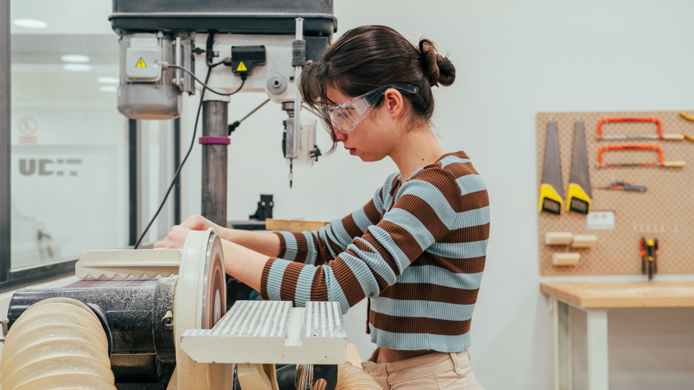

Antecedentes de la Carrera de Diseño Industrial
El diseño industrial surgió como una necesidad a raíz de la Revolución Industrial en el siglo XVIII, cuando la producción en serie transformó el mundo. Esta disciplina busca combinar funcionalidad y estética, y a lo largo de los años ha evolucionado hacia un enfoque que prioriza también la sostenibilidad y la experiencia del usuario. Instituciones como la Bauhaus en Alemania, fundada en 1919 por Walter Gropius, marcaron un hito al integrar los principios del arte y la tecnología en el diseño de productos.
Principales Personajes que Realizaron Aportaciones a la Carrera de Diseño Industrial
• Walter Gropius: Fundador de la Bauhaus, fue pionero en integrar arte y tecnología, sentando las bases del diseño funcional y de vanguardia. Más información sobre Walter Gropius.
• Ray y Charles Eames: Reconocidos por su enfoque innovador y su estilo en muebles, trabajaron también en diseño arquitectónico y cinematográfico, influenciando ampliamente el diseño industrial. Descubre más sobre los Eames.
• Dieter Rams: Conocido por sus "diez principios del buen diseño", su enfoque minimalista y funcional inspiró a generaciones de diseñadores. Información sobre Dieter Rams.

Perfil de Egreso de Diseño Industrial
El egresado de la carrera de Diseño Industrial cuenta con competencias para crear productos que satisfacen las necesidades del usuario, considerando aspectos como ergonomía, funcionalidad y estética. Asimismo, posee conocimientos sólidos en materiales, procesos de fabricación y principios de sostenibilidad, con una visión ética y responsable.
Campo de Trabajo de Diseño Industrial
Los diseñadores industriales tienen un campo laboral amplio que incluye la industria de mobiliario, la automotriz, electrónica, tecnología, diseño de interiores y mucho más. Pueden desempeñarse en empresas de manufactura, en oficinas de diseño, o como consultores independientes, contribuyendo en proyectos que abarcan desde el diseño de productos hasta la investigación de experiencia del usuario.
Principales Aportaciones de la Carrera de Diseño Industrial
El diseño industrial ha transformado la vida cotidiana al crear productos que son funcionales y estéticamente atractivos. Esta disciplina ha sido fundamental para el desarrollo de objetos icónicos que facilitan y mejoran la experiencia de los usuarios, desde muebles emblemáticos hasta dispositivos tecnológicos. Además, el diseño industrial ha contribuido al desarrollo de productos sostenibles y ecológicos, reflejando una preocupación por el impacto ambiental.